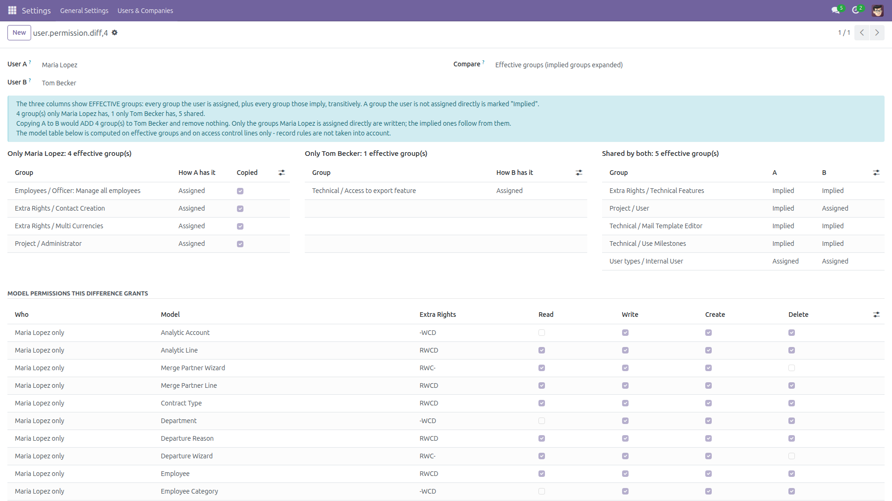
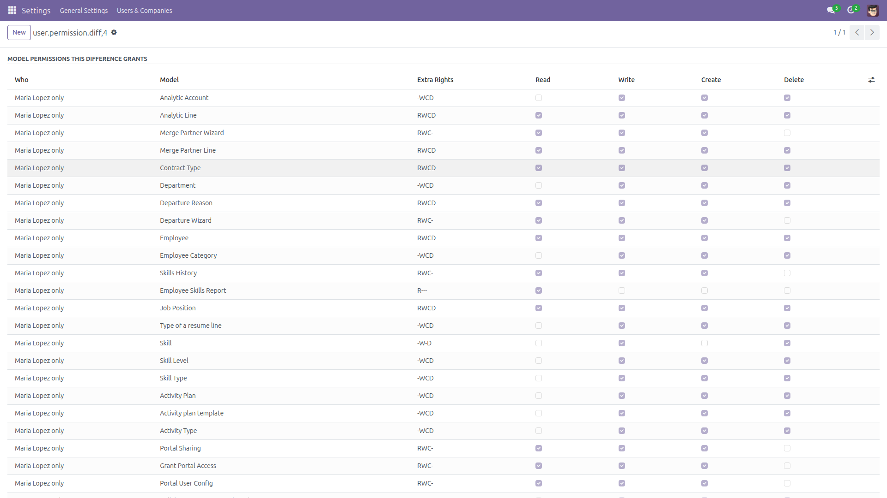
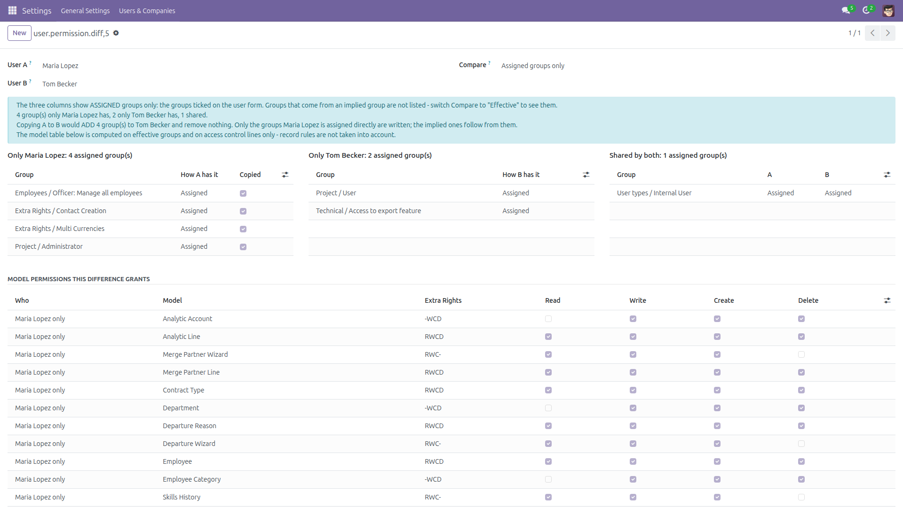
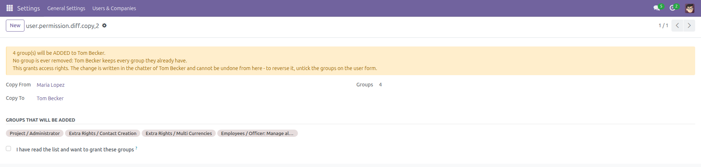
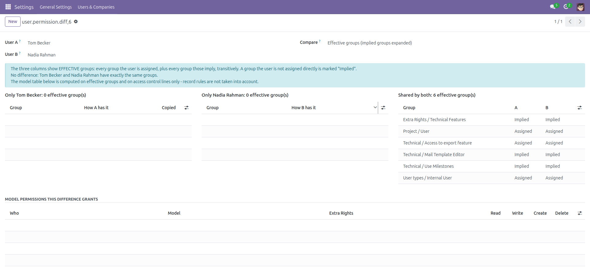

Compare User Permissions
What one user has and the other has not — in one screen.
“Give the new hire the same rights as Maria” normally means opening two user forms side by side and comparing tick boxes. The tick boxes lie: a group can be granted by another group that implies it, so a box that looks empty is not.
This module puts the two users next to each other and answers the question properly — the groups only the first user has, the groups only the second has, the groups they share, each line saying whether the user has it because it is ticked on their form or because another group implies it. Then, behind an explicit confirmation, it copies the missing ones one way.
Free and open source (LGPL-3), Odoo 14.0 through 19.0.
- Three columns — only User A, only User B, shared. No scrolling between two browser tabs.
- Effective groups by default — every group the user is assigned, plus every group those imply, followed transitively (and a cycle in the implication graph terminates instead of hanging). That is what Odoo really checks when it decides whether a menu is visible or a button is allowed.
- Assigned or implied, said out loud — each line marks, per user, whether the group is Assigned on the form or Implied by another group.
- Assigned-only mode — a second mode that compares just the ticked boxes, for when you are about to edit them. The column headers always say which of the two you are looking at.
- What the difference actually grants — a table of the models one user can read, write, create or delete and the other cannot, computed from the access control lines of both users' effective groups.
- A one-way copy, behind a confirmation — a dialog names the target, lists every group that would be added, and refuses to do anything until you tick the confirmation box.
- Nothing to configure — depends on
base and mail only, no external Python library, no settings page.
What the copy never does. It only ever adds. Groups are written with link commands, never with a replace command, so the target keeps every group they already had; if a write were to remove anything, the module aborts and changes nothing. Only the groups the source user is assigned are written — the implied ones follow from them, which is the smallest write that closes the gap and keeps the target's form readable afterwards. The superuser (id 1) and the default administrator account are refused as targets, at the moment of the write and not only when the dialog is opened. The list of groups is recomputed on the server from the two users when you press Grant, so a payload forged over RPC cannot widen it, and your own administrator rights are re-checked there too. What was granted — source user, group names, who did it — is written in the chatter of the target user's contact record.
Honest limitations. Groups only. Record rules (ir.rule) and field-level access are not compared, and the model table is built from access control lines alone — two users with exactly the same groups can still see different records, and this module will report them as identical. Multi-company access, which is not a group, is not part of the comparison either.
The model table is capped at 200 rows per side; when the difference covers more models than that (a brand-new user against a full administrator, typically) the wizard says so on screen rather than truncating silently.
The copy cannot be undone from the wizard — to reverse it, untick the groups on the user form; the chatter note tells you exactly which ones were added. Odoo does not allow mixing user types, so copying internal groups onto a portal or public user is refused and nothing is half-written.
Access is reserved to users with Settings / Administration rights, in both directions: a user without it can neither compare nor copy. That is deliberate — the comparison exposes the whole permission map of the database.
Screenshots

The three columns, with every line saying whether each user has the group because it is assigned or because another group implies it.

What the difference actually grants: the models one user can read, write, create or delete and the other cannot.

The same two users in assigned-only mode — just the boxes ticked on the form, for when you are about to edit them.

The copy names the target, lists every group that would be added, and grants nothing until the box is ticked.

Two users with the same rights say so plainly, instead of leaving you to compare two long lists by eye.
Installation
- Copy the
user_permission_diff folder into your addons path (or install it from the Apps store).
- Open Apps, click Update Apps List, search for Compare User Permissions and click Install.
- No external Python library is required, and the only dependencies are
base and mail, which every Odoo database already has.
Configuration
- There is nothing to configure — no settings page and no scheduled action. The comparison itself is a transient wizard, so nothing it produces is kept in your database.
- Access is limited to the Settings group (Administration: Settings). Give that group to whoever should be able to compare and copy permissions; nobody else can open the tool or read its results.
- Decide who may be a copy target: the superuser (id 1) and the default administrator account are refused by the module itself, so they cannot be widened by accident.
- If you want the granted-groups notes to be easy to find later, make sure the target users have a contact record you follow — that is where the chatter note is written.
Usage
- Go to Settings → Users & Companies → Compare User Permissions. Or, from Settings → Users, tick two users in the list and pick Compare User Permissions in the Actions menu — the two you ticked are filled in for you.
- Pick User A (the reference — the one rights would be copied from) and User B (the one they would be copied to), then press Compare.
- Read the three columns. Only User A is the gap you are usually looking for; the How A has it column tells you whether the group is ticked on their form or comes from another group.
- Scroll to Model permissions this difference grants to see what the gap means in practice — which models one user may read, write, create or delete and the other may not.
- Switch Compare to Assigned groups only when you are about to edit the user form and want to see exactly the boxes you would have to tick.
- To close the gap, press Copy missing groups from A to B. Read the list in the dialog, tick I have read the list and want to grant these groups, then press Grant these groups. Nothing is written until both of those happen.
- The comparison is rebuilt straight away, so you can see that the Only User A column is now empty, and what only User B has is untouched: the copy goes one way.
- To reverse a copy, open the target user's contact chatter, read the note listing exactly which groups were added, and untick them on the user form.
Version notes
Identical features and identical results on every supported series (14.0 – 19.0). Series 14.0 to 18.0 store the implied groups on the user record when the user form is saved, while 19.0 stores only the groups that were explicitly assigned; the effective comparison gives the same answer on both, which is exactly why it exists.
License: LGPL-3 · Source on GitHub · Issues and contributions welcome.